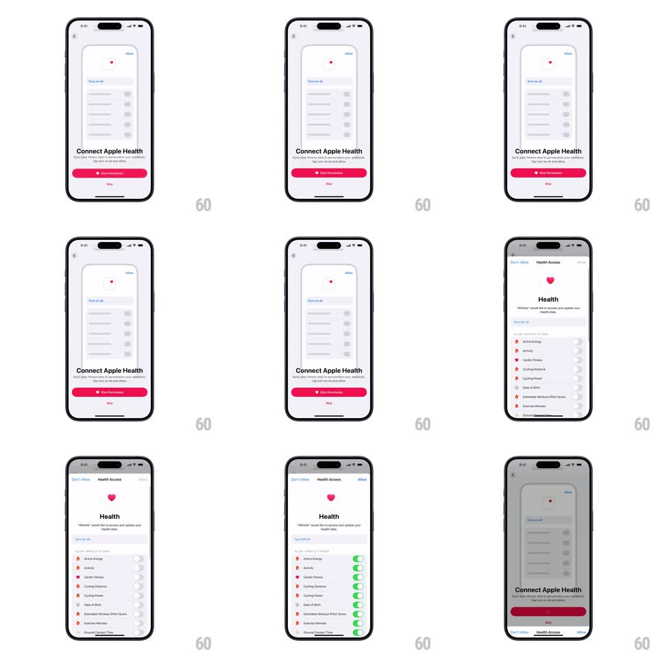

Media
Frame-by-frame

Rebuild this animation 1:1: Whistle's Apple Health connect - the onboarding screen fades into a "Connect Apple Health" page whose mini phone mockup previews the permission sheet; Give Permission raises the native Health Access sheet, and on return the button holds a spinner state.

Rebuild this animation 1:1: Whistle's Apple Health connect - the onboarding screen fades into a "Connect Apple Health" page whose mini phone mockup previews the permission sheet; Give Permission raises the native Health Access sheet, and on return the button holds a spinner state. ## Integration Integration: stack-agnostic spec - springs given as stiffness/damping, timed motions as duration + curve; map every value to your framework and animation library of choice. ## Scene Light screen: back chevron, a centered mini phone mockup showing the Health Access UI (heart icon, toggle rows), "Connect Apple Health" headline with subline, a pink "Give Permission" button, and a "Skip" link. Native state: the real iOS Health Access sheet with Don't Allow / Allow and per-metric toggles. ## Motion spec Pattern: preview-to-native permission handoff, ~600ms. - Enter: the mockup scales from 0.92 with a 16px rise (400ms, ease-out) while the headline and button fade in staggered (80ms). - Tap: the button dims (150ms) and the native sheet slides up (system spring ~380/28), its content identical in layout to the mockup's preview. - Return: the sheet dismisses and the button morphs label -> spinner (label fades 100ms, spinner scales in 150ms) while the screen waits; the mockup behind pulses once (scale 1 -> 1.02 -> 1, 300ms). ## Calibration - The mockup mirrors the real sheet's layout so the transition feels continuous. - Skip never shows the spinner - it exits immediately. ## Reduced motion Screen crossfades (300ms); the button swaps to the spinner without morphing. ## Don't miss - The spinner replaces the label in place - the button never resizes. - The mockup is a preview, not a fake prompt: only the system sheet collects the choice.